| Connector |
Picture |
Characteristics |
Common device on earth |
| Audio |
 |
This Connector is used to transfer audio to another device or speaker system. |
Stero System |
| Component RGB |
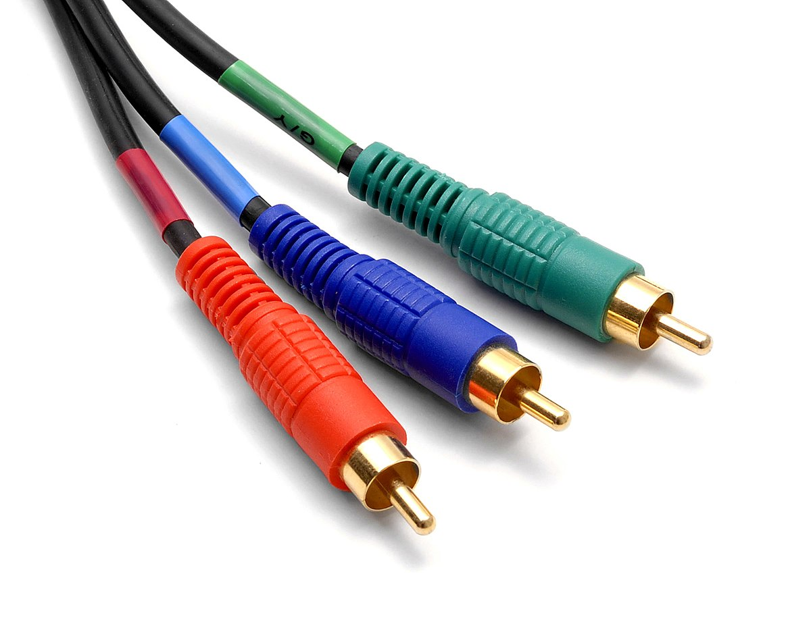 |
This Connector is used to transfer audio and video to another device or video system. |
Television |
| DVI |
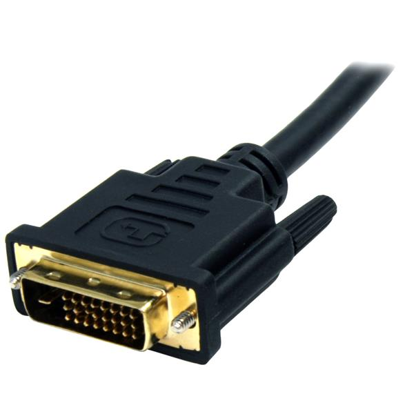 |
This Connector is used to transfer video to another device or video system. |
Graphics Card |
| Display Port |
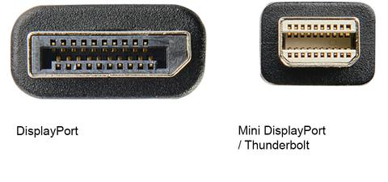 |
This Connector is used to transfer audio and video to another device or video system. |
Computer Monitor |
| Thunderbolt |
|
This Connector is used to connect multiple different types of connectors to a single port. |
Macbook Laptop |
| eSATA |
 |
This Connector is used to connect Hardrives to a computer using one cable. |
Laptops |
| Firewire |
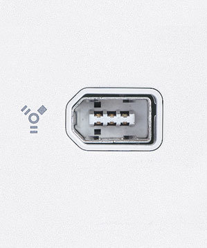 |
This Connector is used to connect multiple different types of connectors to a single port. |
Desktop Computers |
| HDMI |
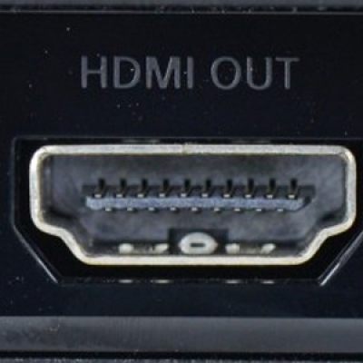 |
This Connector is used to transfer audio and video to another device or video system. |
Computer Monitor/ Television |
| Parallel |
 |
This Connector is used to connect a device to multiple different types of periphery. |
"Old" Computers |
| Power |
 |
This Connector is used to connect a device to power. |
Desktop Computer |
| PS/2 |
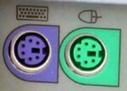 |
This Connector is used to connect a mouse and/or keyboard to a computer. |
"Old" computer |
| RJ-11 |
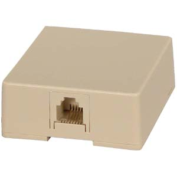 |
This Connector is used to connect a device to a dial-up modem or to a telephone line. |
Dial-Up Modem |
| RJ-54 |
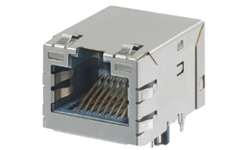 |
This Connector is used to connect a device to a LAN for internet. |
Any Enthernet connected device |
| Serial |
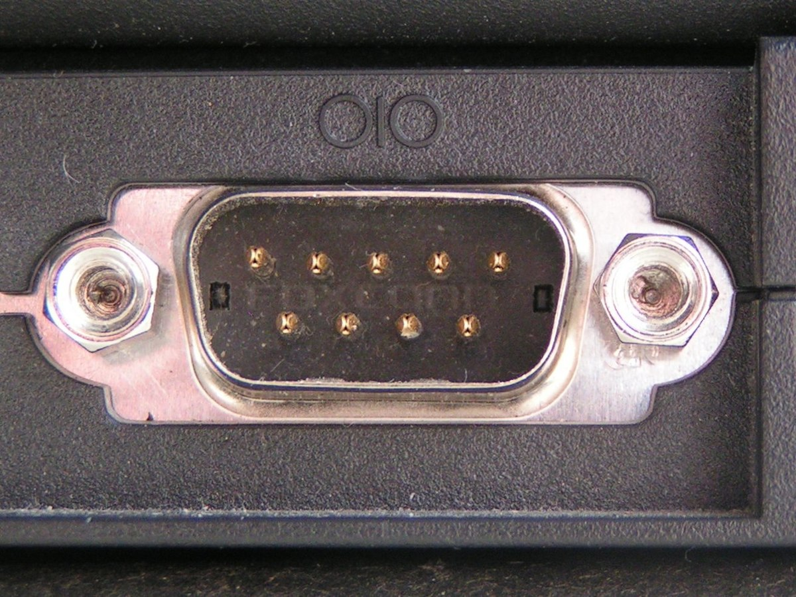 |
This Connector is used to connect a device to multiple different types of periphery using a bitwise protocol. |
"Old Computer" |
| S-Video |
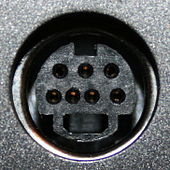 |
This Connector is used to transfer audio and video to another device or video system. |
VCR |
| USB |
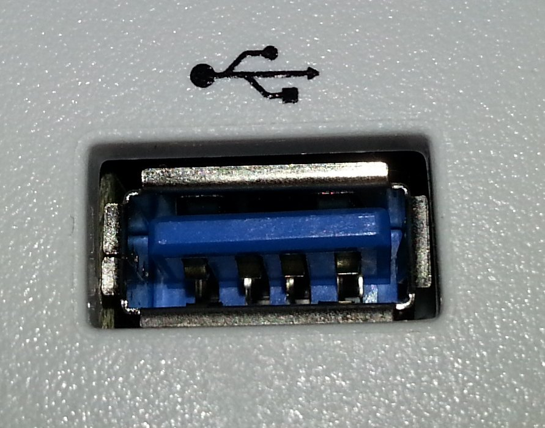 |
This Connector is used to connect a device to multiple different types of periphery. |
Any Computer or mobile device |
| VGA |
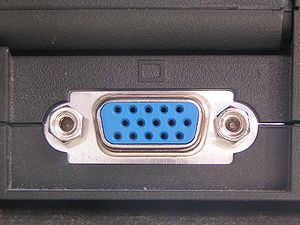 |
This Connector is used to transfer video to another device or video system. |
"Old" Computer Monitors |